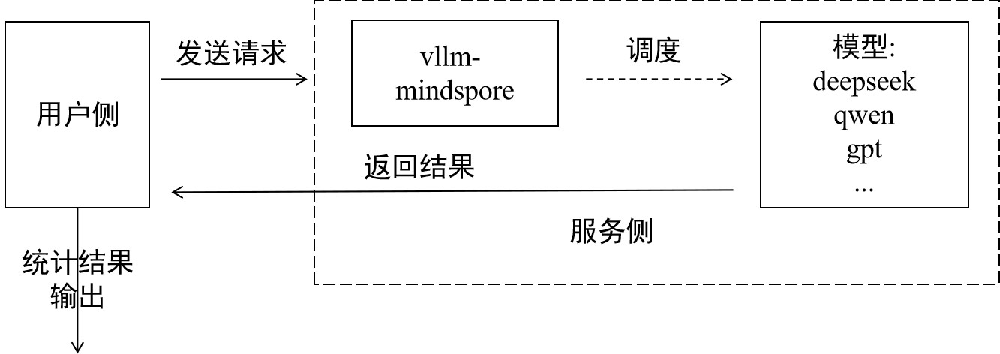

已废弃（Deprecated）
本页属于 静态图（GRAPH_MODE）实现 章节，已标记为废弃。新特性优先在「r2.0.0 动态图实现」章节演进，请优先查阅动态图相关文档。
评测指南

概览
大语言模型（LLM）的迅猛发展催生了对其能力边界与局限性的系统化评估需求。模型评测已成为AI领域不可或缺的基础设施。
主流的模型评测流程就像考试，通过模型对试卷（评测数据集）的答题正确率来评估模型能力。常见数据集如CEval包含中文的52个不同学科职业考试选择题，主要评估模型的知识量；GSM8K由人类出题者编写的8500道高质量小学数学题组成，主要评估模型的推理能力等。
MindSpore Transformers在之前版本，对于部分Legacy架构的模型，适配了Harness评测框架。当前最新适配了AISBench评测框架，理论上支持服务化部署的模型，都能使用AISBench进行评测。
AISBench评测
MindSpore Transformers的服务化评测推荐AISBench Benchmark套件。AISBench Benchmark是基于OpenCompass构建的模型评测工具，兼容OpenCompass的配置体系、数据集结构与模型后端实现，并在此基础上扩展了对服务化模型的支持能力。同时支持30+开源数据集：AISBench支持的评测数据集。
当前，AISBench支持两大类推理任务的评测场景：
精度评测：支持对服务化模型和本地模型在各类问答、推理基准数据集上的精度验证以及模型能力评估。
性能评测：支持对服务化模型的延迟与吞吐率评估，并可进行压测场景下的极限性能测试。
两项任务都遵循同一套评测范式：用户侧发送请求，对服务侧输出的结果做分析，输出最终评测结果，如下图：

前期准备
前期准备主要完成三件事：安装AISBench评测环境，下载数据集，启动vLLM-MindSpore服务。
Step1 安装AISBench评测环境
因为AISBench对torch、transformers都有依赖，但是vLLM-MindSpore的官方镜像中有msadapter包mock的torch，会引起冲突，所以建议为AISBench另起容器安装评测环境。如果坚持以vLLM-MindSpore镜像起容器安装评测环境，需要在启动容器后执行以下几步删除容器内原有torch和transformers：
rm -rf /usr/local/Python-3.11/lib/python3.11/site-packages/torch*
pip uninstall transformers
unset USE_TORCH
然后克隆仓库并通过源码安装：
git clone https://gitee.com/aisbench/benchmark.git
cd benchmark/
pip3 install -e ./ --use-pep517
Step2 数据集下载
官方文档提供各个数据集下载链接，以CEval为例可在CEval文档中找到下载链接，执行以下命令下载解压数据集到指定路径：
cd ais_bench/datasets
mkdir ceval/
mkdir ceval/formal_ceval
cd ceval/formal_ceval
wget https://www.modelscope.cn/datasets/opencompass/ceval-exam/resolve/master/ceval-exam.zip
unzip ceval-exam.zip
rm ceval-exam.zip
其他数据集下载，可到对应的数据集官方文档中找到下载链接。
Step3 启动vLLM-MindSpore服务
具体启动过程见：服务化部署教程，评测支持所有可服务化部署模型。
精度评测流程
精度评测首先要确定评测的接口和评测的数据集类型，具体根据模型能力和数据集选定。
Step1 更改接口配置
AISBench支持OpenAI的v1/chat/completions和v1/completions接口，在AISBench中分别对应不同的配置文件。以v1/completions接口为例，以下称general接口，需更改以下文件ais_bench/benchmark/configs/models/vllm_api/vllm_api_general.py配置：
from ais_bench.benchmark.models import VLLMCustomAPIChat
models = [
dict(
attr="service",
type=VLLMCustomAPIChat,
abbr='vllm-api-general-chat',
path="xxx/DeepSeek-R1-671B", # 指定模型序列化词表文件绝对路径，一般来说就是模型权重文件夹路径
model="DeepSeek-R1", # 指定服务端已加载模型名称，依据实际VLLM推理服务拉取的模型名称配置（配置成空字符串会自动获取）
request_rate = 0, # 请求发送频率，每1/request_rate秒发送1个请求给服务端，小于0.1则一次性发送所有请求
retry = 2,
host_ip = "localhost", # 指定推理服务的IP
host_port = 8080, # 指定推理服务的端口
max_out_len = 512, # 推理服务输出的token的最大数量
batch_size=128, # 请求发送的最大并发数，可以加快评测速度
generation_kwargs = dict( # 后处理参数，参考模型默认配置
temperature = 0.5,
top_k = 10,
top_p = 0.95,
seed = None,
repetition_penalty = 1.03,
)
)
]
更多具体参数说明查看：接口配置参数说明。
Step2 命令行启动评测
确定采用的数据集任务，以CEval为例，采用ceval_gen_5_shot_str数据集任务，命令如下：
ais_bench --models vllm_api_general --datasets ceval_gen_5_shot_str --debug
参数说明：
--models：指定了模型任务接口，即vllm_api_general，对应上一步更改的文件名。此外还有vllm_api_general_chat。--datasets：指定了数据集任务，即ceval_gen_5_shot_str数据集任务，其中的5_shot指问题会重复四次输入，str是指非chat输出。
其它更多的参数配置说明，见配置说明。
评测结束后统计结果会打屏，具体执行结果和日志都会保存在当前路径下的outputs文件夹下，执行异常情况下可以根据日志定位问题。
性能评测流程
性能与精度评测流程类似，不过更关心各请求各阶段的处理时间，通过精确记录每条请求的发送时间、各阶段返回时间及响应内容，系统地评估模型服务在实际部署环境中的响应延迟（如 TTFT、Token间延迟）、吞吐能力（如 QPS、TPUT）、并发处理能力等关键性能指标。以下以原始数据集 GSM8K 进行性能评测为例。
Step1 更改接口配置
通过配置服务化后端参数，可以灵活控制请求内容、请求间隔、并发数量等，适配不同评测场景（如低并发延迟敏感型、高并发吞吐优先型等）。配置与精度评测类似，以vllm_api_stream_chat任务为例，在ais_bench/benchmark/configs/models/vllm_api/vllm_api_stream_chat.py更改如下配置：
from ais_bench.benchmark.models import VLLMCustomAPIChatStream
models = [
dict(
attr="service",
type=VLLMCustomAPIChatStream,
abbr='vllm-api-stream-chat',
path="xxx/DeepSeek-R1-671B", # 指定模型序列化词表文件绝对路径，一般来说就是模型权重文件夹路径
model="DeepSeek-R1", # 指定服务端已加载模型名称，依据实际VLLM推理服务拉取的模型名称配置（配置成空字符串会自动获取）
request_rate = 0, # 请求发送频率，每1/request_rate秒发送1个请求给服务端，小于0.1则一次性发送所有请求
retry = 2,
host_ip = "localhost", # 指定推理服务的IP
host_port = 8080, # 指定推理服务的端口
max_out_len = 512, # 推理服务输出的token的最大数量
batch_size = 128, # 请求发送的最大并发数
generation_kwargs = dict(
temperature = 0.5,
top_k = 10,
top_p = 0.95,
seed = None,
repetition_penalty = 1.03,
ignore_eos = True, # 推理服务输出忽略eos（输出长度一定会达到max_out_len）
)
)
]
具体参数说明查看：接口配置参数说明。
Step2 评测命令
ais_bench --models vllm_api_stream_chat --datasets gsm8k_gen_0_shot_cot_str_perf --summarizer default_perf --mode perf
参数说明：
--models：指定了模型任务接口，即vllm_api_stream_chat，对应上一步更改的配置的文件名。--datasets：指定了数据集任务，即gsm8k_gen_0_shot_cot_str_perf数据集任务，有对应的同名任务文件，其中的 GSM8K 指所用的数据集，0_shot指问题不会重复，str是指非chat输出，perf是指做性能测试。--summarizer：指定了任务统计数据。--mode：指定了任务执行模式。
其它更多的参数配置说明，见配置说明。
评测结果说明
评测结束会输出性能测评结果，结果包括单个推理请求性能输出结果和端到端性能输出结果，参数说明如下：
指标 |
全称 |
说明 |
|---|---|---|
E2EL |
End-to-End Latency |
单个请求从发送到接收全部响应的总时延(ms) |
TTFT |
Time To First Token |
首个 Token 返回的时延(ms) |
TPOT |
Time Per Output Token |
输出阶段每个 Token 的平均生成时延（不含首个 Token） |
ITL |
Inter-token Latency |
相邻 Token 间的平均间隔时延（不含首个 Token） |
InputTokens |
/ |
请求的输入 Token 数量 |
OutputTokens |
/ |
请求生成的输出 Token 数量 |
OutputTokenThroughput |
/ |
输出 Token 的吞吐率（Token/s） |
Tokenizer |
/ |
Tokenizer 编码耗时(ms) |
Detokenizer |
/ |
Detokenizer 解码耗时(ms) |
更多评测任务，如合成随机数据集评测、性能压测，可查看以下文档：AISBench官方文档。
更多调优推理性能技巧，可查看以下文档：推理性能调优。
更多参数说明请看以下文档：性能测评结果说明。
附录
FAQ
Q：评测结果输出不符合格式，如何使结果输出符合预期？
在某些数据集中，若希望模型的输出符合预期，那么可以更改prompt。
以CEval的gen_0_shot_str为例，我们想让输出的第一个token就为选择的答案，可更改以下文件下的template：
# ais_bench/benchmark/configs/datasets/ceval/ceval_gen_0_shot_str.py 66~76行
for _split in ['val']:
for _name in ceval_all_sets:
_ch_name = ceval_subject_mapping[_name][1]
ceval_infer_cfg = dict(
prompt_template=dict(
type=PromptTemplate,
template=f'以下是中国关于{_ch_name}考试的单项选择题，请选出其中的正确答案。\n{{question}}\nA. {{A}}\nB. {{B}}\nC. {{C}}\nD. {{D}}\n答案: {{answer}}',
),
retriever=dict(type=ZeroRetriever),
inferencer=dict(type=GenInferencer),
)
其他数据集，也是相应地更改对应文件中的template，构造合适的prompt。
Q：不同数据集应该如何配置接口类型和推理长度？
具体取决于模型类型和数据集类型的综合考虑。像reasoning类model就推荐用chat接口，可以使能think，推理长度就要设得长一点；像base模型就用general接口。
以Qwen2.5模型评测MMLU数据集为例：从数据集来看，MMLU这类数据集以知识考察为主，就推荐用general接口，同时在数据集任务时不选用带cot的，即不使能思维链。
若以DeepSeek-R1模型评测AIME2025这类困难的数学推理题为例：推荐使用chat接口，并设置超长推理长度，使用带cot的数据集任务。
常见报错
客户端返回HTML数据，包含乱码
报错现象：返回网页HTML数据
解决方案：检查客户端是否开了代理，检查proxy_https、proxy_http环境变量关掉代理。服务端报 400 Bad Request
报错现象：
INFO: 127.0.0.1:53456 - "POST /v1/completions HTTP/1.1" 400 Bad Request INFO: 127.0.0.1:53470 - "POST /v1/completions HTTP/1.1" 400 Bad Request
解决方案：检查客户端接口配置中，请求格式是否正确。
服务端报错404 xxx does not exist
报错现象：
[serving_chat.py:135] Error with model object='error' message='The model 'Qwen3-30B-A3B-Instruct-2507' does not exist.' param=None code=404 "POST /v1/chat/completions HTTP/1.1" 404 Not Found [serving_chat.py:135] Error with model object='error' message='The model 'Qwen3-30B-A3B-Instruct-2507' does not exist.'
解决方案：检查接口配置中的模型路径是否可达。
请求接口配置参数说明表
参数 |
说明 |
|---|---|
type |
任务接口类型 |
path |
模型序列化词表文件绝对路径，一般来说就是模型权重文件夹路径 |
model |
服务端已加载模型名称，依据实际VLLM推理服务拉取的模型名称配置（配置成空字符串会自动获取） |
request_rate |
请求发送频率，每1/request_rate秒发送1个请求给服务端，小于0.1则一次性发送所有请求 |
retry |
请求失败重复发送次数 |
host_ip |
推理服务的IP |
host_port |
推理服务的端口 |
max_out_len |
推理服务输出的token的最大数量 |
batch_size |
请求发送的最大并发数 |
temperature |
后处理参数，温度系数 |
top_k |
后处理参数 |
top_p |
后处理参数 |
seed |
随机种子 |
repetition_penalty |
后处理参数，重复性惩罚 |
ignore_eos |
推理服务输出忽略eos（输出长度一定会达到max_out_len） |
参考资料
关于AISBench的更多教程和使用方式可参考官方资料：
Harness评测
LM Evaluation Harness是一个开源语言模型评测框架，提供60多种标准学术数据集的评测，支持HuggingFace模型评测、PEFT适配器评测、vLLM推理评测等多种评测方式，支持自定义prompt和评测指标，包含loglikelihood、generate_until、loglikelihood_rolling三种类型的评测任务。基于Harness评测框架对MindSpore Transformers进行适配后，支持加载MindSpore Transformers模型进行评测。
目前已验证过的模型和支持的评测任务如下表所示：
已验证的模型 |
支持的评测任务 |
|---|---|
Llama3 |
gsm8k、ceval-valid、mmlu、cmmlu、race、lambada |
Llama3.1 |
gsm8k、ceval-valid、mmlu、cmmlu、race、lambada |
Qwen2 |
gsm8k、ceval-valid、mmlu、cmmlu、race、lambada |
安装
Harness支持pip安装和源码编译安装两种方式。pip安装更简单快捷，源码编译安装更便于调试分析，用户可以根据需要选择合适的安装方式。
pip安装
用户可以执行如下命令安装Harness（推荐使用0.4.4版本）：
pip install lm_eval==0.4.4
源码编译安装
用户可以执行如下命令编译并安装Harness：
git clone --depth 1 -b v0.4.4 https://github.com/EleutherAI/lm-evaluation-harness
cd lm-evaluation-harness
pip install -e .
使用方式
评测前准备
创建一个新目录，例如名称为
model_dir，用于存储模型yaml文件。在上个步骤创建的目录中，放置模型推理yaml配置文件（predict_xxx_.yaml）。不同模型的推理yaml配置文件所在目录位置，请参考模型库。
配置yaml文件。如果yaml中模型类、模型Config类、模型Tokenizer类使用了外挂代码，即代码文件在research目录或其他外部目录下，需要修改yaml文件：在相应类的
type字段下，添加auto_register字段，格式为“module.class”（其中“module”为类所在脚本的文件名，“class”为类名。如果已存在，则不需要修改）。以predict_llama3_1_8b.yaml配置为例，对其中的部分配置项进行如下修改：
run_mode: 'predict' # 设置推理模式 load_checkpoint: 'model.ckpt' # 权重路径 processor: tokenizer: vocab_file: "tokenizer.model" # tokenizer路径 type: Llama3Tokenizer auto_register: llama3_tokenizer.Llama3Tokenizer
关于每个配置项的详细说明请参考配置文件说明。
如果使用
ceval-valid、mmlu、cmmlu、race、lambada数据集进行评测，需要将use_flash_attention设置为False，以predict_llama3_1_8b.yaml为例，修改yaml如下：model: model_config: # ... use_flash_attention: False # 设置为False # ...
评测样例
执行脚本run_harness.sh进行评测。
run_harness.sh脚本参数配置如下表：
参数 |
类型 |
参数介绍 |
是否必须 |
|---|---|---|---|
|
str |
外挂代码所在目录的绝对路径。比如research目录下的模型目录 |
否（外挂代码必填） |
|
str |
需设置为 |
是 |
|
str |
模型及评估相关参数，见下方模型参数介绍 |
是 |
|
str |
数据集名称。可传入多个数据集，使用逗号（，）分隔 |
是 |
|
int |
批处理样本数 |
否 |
|
显示帮助信息并退出 |
否 |
其中，model_args参数配置如下表：
参数 |
类型 |
参数介绍 |
是否必须 |
|---|---|---|---|
|
str |
模型目录路径 |
是 |
|
int |
模型生成的最大长度 |
否 |
|
bool |
开启并行策略(执行多卡评测必须开启) |
否 |
|
int |
张量并行数 |
否 |
|
int |
数据并行数 |
否 |
Harness评测支持单机单卡、单机多卡、多机多卡场景，每种场景的评测样例如下：
单卡评测样例
source toolkit/benchmarks/run_harness.sh \ --register_path mindformers/research/llama3_1 \ --model mf \ --model_args pretrained=model_dir \ --tasks gsm8k
多卡评测样例
source toolkit/benchmarks/run_harness.sh \ --register_path mindformers/research/llama3_1 \ --model mf \ --model_args pretrained=model_dir,use_parallel=True,tp=4,dp=1 \ --tasks ceval-valid \ --batch_size BATCH_SIZE WORKER_NUM
BATCH_SIZE为模型批处理样本数；WORKER_NUM为使用计算卡的总数。
多机多卡评测样例
节点0（主节点）命令：
source toolkit/benchmarks/run_harness.sh \ --register_path mindformers/research/llama3_1 \ --model mf \ --model_args pretrained=model_dir,use_parallel=True,tp=8,dp=1 \ --tasks lambada \ --batch_size 2 8 4 192.168.0.0 8118 0 output/msrun_log False 300
节点1（副节点）命令：
source toolkit/benchmarks/run_harness.sh \ --register_path mindformers/research/llama3_1 \ --model mf \ --model_args pretrained=model_dir,use_parallel=True,tp=8,dp=1 \ --tasks lambada \ --batch_size 2 8 4 192.168.0.0 8118 1 output/msrun_log False 300
节点n（副节点）命令：
source toolkit/benchmarks/run_harness.sh \ --register_path mindformers/research/llama3_1 \ --model mf \ --model_args pretrained=model_dir,use_parallel=True,tp=8,dp=1 \ --tasks lambada \ --batch_size BATCH_SIZE WORKER_NUM LOCAL_WORKER MASTER_ADDR MASTER_PORT NODE_RANK output/msrun_log False CLUSTER_TIME_OUT
BATCH_SIZE为模型批处理样本数；WORKER_NUM为所有节点中使用计算卡的总数；LOCAL_WORKER为当前节点中使用计算卡的数量；MASTER_ADDR为分布式启动主节点的ip；MASTER_PORT为分布式启动绑定的端口号；NODE_RANK为当前节点的rank id；CLUSTER_TIME_OUT为分布式启动的等待时间，单位为秒。
多机多卡评测需要分别在不同节点运行脚本，并将参数MASTER_ADDR设置为主节点的ip地址， 所有节点设置的ip地址相同，不同节点之间仅参数NODE_RANK不同。
查看评测结果
执行评测命令后，评测结果将会在终端打印出来。以 GSM8K 为例，评测结果如下，其中Filter对应匹配模型输出结果的方式，n-shot对应数据集内容格式，Metric对应评测指标，Value对应评测分数，Stderr对应分数误差。
Tasks |
Version |
Filter |
n-shot |
Metric |
Value |
Stderr |
||
|---|---|---|---|---|---|---|---|---|
gsm8k |
3 |
flexible-extract |
5 |
exact_match |
↑ |
0.5034 |
± |
0.0138 |
strict-match |
5 |
exact_match |
↑ |
0.5011 |
± |
0.0138 |
FAQ
使用Harness进行评测，在加载HuggingFace数据集时，报错
SSLError：注意：关闭SSL校验存在风险，可能暴露在中间人攻击（MITM）下。仅建议在测试环境或你完全信任的连接里使用。
训练后模型进行评测
模型在训练过程中或训练结束后，一般会将训练得到的模型权重去跑评测任务，来验证模型的训练效果。本章节介绍了从训练后到评测前的必要步骤，包括：
训练后的分布式权重的处理（单卡训练可忽略此步骤）；
基于训练配置编写评测使用的推理配置文件；
运行简单的推理任务验证上述步骤的正确性；
进行评测任务。
分布式权重合并
训练后产生的权重如果是分布式的，需要先将已有的分布式权重合并成完整权重后，再通过在线切分的方式进行权重加载完成推理任务。
MindSpore Transformers 提供了一份 safetensors 权重合并脚本，使用该脚本，可以将分布式训练得到的多个 safetensors 权重进行合并，得到完整权重。
合并指令参考如下（对第 1000 步训练权重进行去 adam 优化器参数合并，且训练权重在保存时开启了去冗余功能）：
python toolkit/safetensors/unified_safetensors.py \
--src_strategy_dirs output/strategy \
--mindspore_ckpt_dir output/checkpoint \
--output_dir /path/to/unified_train_ckpt \
--file_suffix "1000_1" \
--filter_out_param_prefix "adam_" \
--has_redundancy False
脚本参数说明：
src_strategy_dirs：源权重对应的分布式策略文件路径，通常在启动训练任务后默认保存在
output/strategy/目录下。分布式权重需根据以下情况填写：源权重开启了流水线并行：权重转换基于合并的策略文件，填写分布式策略文件夹路径。脚本会自动将文件夹内的所有
ckpt_strategy_rank_x.ckpt文件合并，并在文件夹下生成merged_ckpt_strategy.ckpt。如果已经存在merged_ckpt_strategy.ckpt，可以直接填写该文件的路径。源权重未开启流水线并行：权重转换可基于任一策略文件，填写任意一个
ckpt_strategy_rank_x.ckpt文件的路径即可。
注意：如果策略文件夹下已存在
merged_ckpt_strategy.ckpt且仍传入文件夹路径，脚本会首先删除旧的merged_ckpt_strategy.ckpt，再合并生成新的merged_ckpt_strategy.ckpt以用于权重转换。因此，请确保该文件夹具有足够的写入权限，否则操作将报错。mindspore_ckpt_dir：分布式权重路径，请填写源权重所在文件夹的路径，源权重应按
model_dir/rank_x/xxx.safetensors格式存放，并将文件夹路径填写为model_dir。output_dir：目标权重的保存路径，默认值为
"/path/output_dir"，如若未配置该参数，目标权重将默认放置在/path/output_dir目录下。file_suffix：目标权重文件的命名后缀，默认值为
"1_1"，即目标权重将按照*1_1.safetensors格式查找匹配的权重文件进行合并。filter_out_param_prefix：合并权重时可自定义过滤掉部分参数，过滤规则以前缀名匹配。如优化器参数
"adam_"。has_redundancy：合并的源权重是否是冗余的权重，默认为
True，表示用于合并的原始权重有冗余；若原始权重保存时为去冗余权重，则需设置为False。
推理配置开发
在完成权重文件的合并后，需依据训练配置文件开发对应的推理配置文件。
以 Qwen3 为例，基于 Qwen3 推理配置修改 Qwen3 训练配置：
Qwen3 训练配置主要修改点包括：
run_mode的值修改为"predict"。添加
pretrained_model_dir参数，配置为 Hugging Face 或 ModelScope 的模型目录路径，放置模型配置、Tokenizer 等文件。如果将训练得到的完整权重放置在此目录底下，则 yaml 中可以不配置load_checkpoint。parallel_config只保留data_parallel和model_parallel。model_config中只保留compute_dtype、layernorm_compute_dtype、softmax_compute_dtype、rotary_dtype、params_dtype，和推理配置保持精度一致。parallel模块中，只保留parallel_mode和enable_alltoall，parallel_mode的值修改为"MANUAL_PARALLEL"。
如果模型的参数量在训练时进行了自定义，或与开源配置不同，进行推理时需要同步修改
pretrained_model_dir对应路径下的模型配置 config.json。也可以在model_config中配置对应修改后的参数，传入推理时，model_config中的同名配置会覆盖 config.json 中对应配置的值。 如需检查传入的配置项是否正确，可以通过查找日志中的The converted TransformerConfig is: ...或The converted MLATransformerConfig is: ...内容，查找对应的配置项。
推理功能验证
在权重和配置文件都准备好的情况下，使用单条数据输入进行推理，检查输出内容是否符合预期逻辑，参考推理文档，拉起推理任务。
如，以 Qwen3 单卡推理为例，拉起推理任务的指令为：
python run_mindformer.py \
--config configs/qwen3/predict_qwen3.yaml \
--run_mode predict \
--use_parallel False \
--predict_data '帮助我制定一份去上海的旅游攻略'
如果输出内容出现乱码或者不符合预期，需要定位精度问题。
检查模型配置正确性
确认模型结构与训练配置一致。参考训练配置模板使用教程，确保配置文件符合规范，避免因参数错误导致推理异常。
验证权重加载完整性
检查模型权重文件是否完整加载，确保权重名称与模型结构严格匹配。参考新模型权重转换适配教程，查看权重日志即权重切分方式是否正确，避免因权重不匹配导致推理错误。
定位推理精度问题
若模型配置与权重加载均无误，但推理结果仍不符合预期，需进行精度比对分析，参考推理精度比对文档，逐层比对训练与推理的输出差异，排查潜在的数据预处理、计算精度或算子问题。
使用 AISBench 进行评测
参考 AISBench 评测章节，使用 AISBench 工具进行评测，验证模型精度。